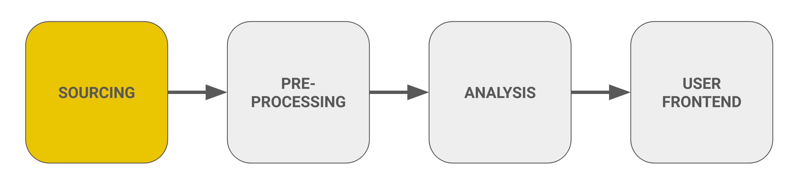

Step 1: Data Sourcing
Overview
In this section, we will describe the data sources used and how we sourced them.

Sensor Data for Visitor Counts
The visitor sensor data is an internal administrative file maintained by the Bavarian Forest National Park. The park has over 700 entry and exit points, of which 26 are equipped with pyro sensors designed to detect the flow of visitors. These sensors can distinguish the direction in which visitors are traveling, counting each person entering or exiting the park. When a visitor enters, the sensor increments a count of 1 to the sensor-specific “IN” column in the data file, and similarly, when a visitor exits, it increments a count of 1 to the corresponding “OUT” column. This system allows for the tracking of visitor movement throughout the park. In addition to this, some sensors, referred to as "multi-sensors," are capable of distinguishing between cyclists and pedestrians, providing more detailed visitor data. Furthermore, while some sensors can automatically upload their data to the Bayern Cloud, others require manual uploads through on-site data collection using a USB drive.
Visitor Center Data
The visitor center data file is an internal administrative data file maintained by the Bavarian Forest National Park. This data file includes daily counts of visitors to the various visitor centers (add the types of visitor centers) as well as columns that indicate whether or not the visitor center was open or closed on a given day. Additionally, temporal-related information is kept in this administrative file, including whether or not a given day was a federal or national holiday (Bavarian or Czech; School or Federal or School holiday), the season, the day of the week, and date.
Weather Data
Historical and forecasted weather data was sourced using the Meteostat Python API, a powerful library that provides access to a comprehensive database of weather and climate information. This library allows users to retrieve data for specific locations worldwide. For our analysis, we obtained hourly historical and forecasted weather data for the Haselbach region, with specific coordinates of Latitude = 49.31452390542327 and Longitude = 12.711573421032. Our analysis focused on several key variables, including wind speed (km/h), relative humidity (%), and temperature (Celsius). Additionally, we included a categorical variable that classifies the weather conditions at each hour into 27 levels, encompassing conditions such as sunny, fair, rain, heavy rain, cloudy, hail, and more. CoCo, which stands for weather “Condition Code," is the shorthand used by Meteostat to classify various weather conditions. Below is a table that outlines all levels of CoCo and how we recoded them for easier interpretation:
| Original CoCo Codes | Original CoCo Weather Description | Recoded CoCo Code & New Weather Description |
|---|---|---|
| 1, 2 | Clear, Fair | 1 (Sunny) |
| 3, 4, 5 | Cloudy, Overcast, Fog | 2 (Clouds) |
| 7, 8, 9, 17, 18, 19 | Light Rain, Rain, Heavy Rain, Rain Shower, Heavy Rain Shower, Sleet Shower | 3 (Rainy) |
| 14, 15, 16, 21, 22 | Light Snowfall, Snowfall, Heavy Snowfall, Snow Shower, Heavy Snow Shower | 4 (Snow) |
| 6, 10, 11, 12, 13, 20 | Freezing Fog, Freezing Rain, Heavy Freezing Rain, Sleet, Heavy Sleet, Heavy Sleet Shower | 5 (Extreme Weather) |
| 23, 24, 25, 26, 27 | Lightning, Hail, Thunderstorm, Heavy Thunderstorm, Storm | 6 (Storms) |
Parking Data
Historical and real-time parking data for the Bavarian Forest National Park is sourced from the Bayern Cloud, a cloud computing service provided by the Bavarian government to support public administration, municipalities, and other organizations in the region. The park has 12 sensors installed in its parking lots, which monitor the occupancy of parking spaces. These sensors provide data on each lot's capacity, current occupancy, and occupancy rate. However, two of the parking lot sensors are currently offline, so data from those locations is unavailable. The frequency at which the sensors transmit data to the Bayern Cloud varies, both across different sensors and within individual sensors over time.